第九段階 検証・引き継ぎ報告
2026-11-11（日本時間）。独立施設へ2人の生活、3D個室訪問、営業遮蔽物、所持品と保存を追加しました。47搬送体・64セル。実WebGLの自然さは未確認で、以下はソース・実メッシュ・CPU試験の結果です。
1. 第八段階の保存と復元
stage8-frozen = 159673a79b1dd6a18b149d2e0bb95d16792c257a をGitHubに固定。完全ソースZIPには素材・設定・検証資料を含む2020追跡ファイルを収録し、Git blobハッシュとZIP CRCを全照合しました。保存証跡。
独立した復元worktreeで146/146、さらに比較用コピーでも146/146通過。復元ログ。ビルドTARはworkspaceへ別保存し、Site保存版13も残しています。旧固定タグ・保存版1〜7は未変更です。比較第八段階は入れ子/ZIPを省いた表示用コピーで、正本は固定タグと完全ZIPです。
復元はREADMEの git worktree add --detach ../tsugime-stage8 stage8-frozen を使用し、現行作業ツリーをresetしません。
2. 開発ブランチとコミット
GitHub stage9-development。最終配信SHAはSites保存版のsource provenanceとGitHub先端で照合し、チャット最終報告に併記します。GitHub main・本編リポジトリは変更しません。
3. 実験URL・ソース
実験サイト：https://tsugime-architecture-transport-lab.merkatzzz.chatgpt.site
現行ソースZIP ／ 起動・復元README ／ 設計資料。既存の閲覧範囲を維持し、一般公開へ勝手に変更しません。旧完全ZIPを現行ZIPへ入れ子にせず、個別配布で25MiB/asset上限を守ります。
4. 変更前後の平面図
第八段階の平面図・報告と、本ページ下部の現行ABC三層図を比較できます。現行座標・開口データ。第二層南側へJ9/P9を増築し、A/Cは居住区EV→G5東、BはG3東から到達できます。
5. 新しい搬送体
| 体 | セル・寸法 | 配置と用途 |
|---|
| J9 | 1・8×8 | (50.4,0,33.2)、共同棟への生活廊下 |
| P9 | 4・16×16 | A/C(58.8,0,25.2)、Bはz25.6、住戸/作業室/連続共用室 |
＋2体・5セル（45/59→47/64、セル＋8.47%）。P9北側に固定仕切りと通常扉2枚、南側は一続きの共同生活室。セル境界に不要な外壁・搬送シャッターを置いていません。P9は下部デッキを使って0.4mの整列を実搬送し、プレイヤー/在室NPCのローカル位置を維持します。4セル回転は採用していません。
6. 1〜4セル型の採用理由
新設は単独J9と四連結P9。既存の単独住戸、二連結G1/G4/V2/Q1、三連結L型G3/V1/L1、分割可能H1/H2を維持しました。1〜4セルを等数に増やさず、共同室と2室を同時に運ぶ用途に4セルを1体だけ採用しています。3セルL型の欠けセルには既存居住区EVが残り、全面再設計をしていません。
7. 生活周期と唯一の所在
店主はP9住戸901↔T1、住人はR3↔T2。Life.statesのlocationだけが実所在で、描画・衝突・会話・取引・保存が同じ値を参照します。モデルは各1体のみ生成し、現在のbodyへ親を付け替えます。生活定義・予定・看板。
ゲーム時計60秒の名目周期で、自室15秒・仕事45秒。搬送倍率とは独立。店主offset0、住人offset8で同時消失を避けます。住人の在室予定は周期52〜60秒と0〜7秒です。
会話/訪問/取引、遮蔽待ち、店内のプレイヤー、切断俯瞰での観察では所在切替を保留するため、実際の滞在は予定より延長し得ます。15秒で強制消失する実装ではありません。特別イベントstay-homeを通常予定より優先できますが、物語イベントは追加していません。
生活を試すときは一人称探索へ切り替えます。俯瞰の切断表示でNPCを直接観察中は、ワープが見えないよう所在変更を保留します。
8. 在室・不在時の体験
R3の住人扉/P9の住戸901を近くからクリックまたはEで操作。在室なら同じ施設の3D個室を固定カメラで表示し、「話しかける」で会話。会話後も訪問画面に留まり、S/「廊下へ戻る」で廊下のbody-local位置と視線へ戻ります。搬送後も座標がずれません。
不在なら扉を開放せず、画面下へ「不在・次の在室予定：生活時計○秒」を表示します。通常の個室に鍵は不要。訪問中は時計が進んでも住人を消しません。旧resident-room.svgは保全しますが、現行画面には重ねません。実画面のスクリーンショットは取得できていません。
9. 店舗の開店・閉店
T1は厚い布カーテン、T2は金属営業パネル。側面・背面の固定壁と屋根を持つ、小さな開放型売場へ改築しました。営業パネルは0.8秒で上下。完全開放後だけ新しい会話/取引を開始できます。
閉店予定になると新取引を拒否し、進行中の会話/取引は完了可能。終了後に閉鎖を開始します。店内やパネル近傍にプレイヤーがいる間は閉鎖/ワープを保留し、目の前で消えないようにしています。
10. 遮蔽物とワープの処理
閉店：新取引拒否→パネル閉鎖→cover=1を確認→所在を自室へ。開店：閉鎖状態→店主を店内へ配置→開放→営業。搬送用shuttersとは別の配列・状態です。店員用裏口は増設していません。
R3の細窓には訪問中以外のプライバシーカーテンを追加。自室の通常扉が閉じるまで出勤しません。俯瞰では保留し、実探索では既存の屋根が残ります。正面・左右・背面・上方の実メッシュ光線と、所在変更時cover=1の不変条件を検査しました。
施設搬送中は所在変更/新取引を止め、安全なら営業パネルを閉じます。到着後に予定とpinを再評価します。営業パネルが別の搬送体と独立してワープすることはありません。
11. 3D住民の改修
球・円柱・トーラスによる独自の低ポリ立体モデルへ変更。店主は帽子/環状首/前掛け/作業肢、住人は触角/殻/異なる体形。頭の微小な待機運動と、会話/訪問カメラに向く反応を追加しました。
形状は毎フレーム生成せず変換のみ更新し、各NPCの全身クリックを同じ固有IDへ解決します。3Dとして構成した事実は検査済みですが、自然な見栄え・品質を実WebGLで確認したとは報告しません。
12. 看板・一枚絵の変更
看板は個室矩形から廊下側を判定し、入口外側へオフセットして正しい法線を向けます。チャンクローカル座標なので90度回転に追従。店舗/公共入口は用途、住宅は小標識。既存の床IDは開発俯瞰用として残します。
R3の全面SVG表示は外し、WebGLキャンバスを残したまま訪問カメラと会話/退出UIを表示します。保存版や元素材は削除していません。
13. 所持品閲覧・使用UI
「所持品」は名称・説明・個数の閲覧だけ。「品物を使う」は品を選んでからNPC/扉の対象ボタンを指定します。閉じる/キャンセル/Escで通常探索へ。誤使用は消費しません。
通常使用品と回収試料をkindで区別。独立実験の第八段階には本編の所持品・回収売却・順応度・永続セーブは存在しなかったため、本編を移植したり経済を作り直したりしていません。
14. 届け物と保存の実験
使用結果：受取は一度、誤った扉への使用は拒否、店主への手渡しは1個消費しdeliveredを更新、二重使用は拒否。営業中の近距離・店主の在室訪問・既に開始した取引で受け渡し可能です。
専用ブラウザslotに時計・実所在・cover・イベント・品物・使用結果・ABC配置・扉・安定EV位置・会話/訪問/取引を保存。移動中は保存を断り、到着後の保存を案内。schema0の単純inventoryや未知品IDを保持できるAPIを用意し、不正数値は反映前に拒否します。他の保存slotは削除しません。本編の任意セーブの互換性を保証するものではありません。
所持品画面中に退避が必要な場合は画面を閉じ、実経路で退避する追加検証も通過しました。
15. 搬送と回帰試験
現行160件、保存第八段階146件、所持品退避ガード追加後の自動運行7件が通過。最終集計・現行ログ。途中で見つかった営業パネル装飾の寸法引数欠落（NaN形状）と、新モデル付属器官のクリックID不足も修正し、有限座標・実頂点・視点光線の再試験を通しました。保存版1〜7の以前の511件の成功証跡はそのまま維持し、今回再実行した件数には混ぜません。
範囲3×方式2×ABCの18計画、両EV、H1/H2、C0/Q1、N4/G2、S1、泉/生物12実歩行を再検査。扉24枚の掃引、重複面6条件で露出同法線重複0、局所/cache対全体生成24条件も通過しました。
| 遷移 | 時間（1倍速・開閉/警告除く） | 連続検査 | 最大同時 |
|---|
| A→B | 23.37秒 | 52744 | 12体 |
| B→C | 36.87秒 | 67317 | 10体 |
| C→A | 17.33秒 | 9531 | 7体 |
一周77.57秒で第八段階と同じ。P9の追加搬送を既存の予約内で処理できています。全経路・固定設備・全角度包絡・0.2m離隔を維持し、衝突判定や不可視の実体を省略していません。
16. 第八段階との性能比較
同じNode/Linux、仮想1280×720/FOV54、搬送8倍、dt0.1、三周9遷移。保存第八段階と現行を順番に同じハーネスで計測。前・後。
以下は待ち時間を含むCPU側の計測区間で、実WebGLのフレーム時間/FPSではありません。processCpuMsも生データに保存。単回測定で初回生成・GC・実行環境の影響を切り分けておらず、特に着床の外れ値から第九段階が何倍速いとは結論しません。
| 項目 | 第八段階 | 第九段階 |
|---|
| 搬送体/セル | 45/59 | 47/64 |
| 通常探索CPU平均ms | 1.81 | 1.56 |
| 住宅歩行CPU平均ms | 0.94 | 1.23 |
| 大型搬送CPU平均ms | 2.35 | 2.17 |
| 回転CPU平均ms | 2.66 | 2.49 |
| 完了後最初1秒CPU平均ms | 3.74 | 2.93 |
| 同p95/p99/最大ms | 10.16/20.28/91.97 | 19.51/22.99/29.52 |
| 三周後CPU平均ms | 1.41 | 0.68 |
| GC後最終heap MiB | 65.47 | 69.79 |
| scene論理＋batch Mesh数 | 4685 | 4931 |
| 同三角形総数 | 108360 | 115976 |
| 通常の可視Mesh候補数 | 1114 | 1181 |
| ABC形状生成/復元 | 6/22 | 6/22 |
| 静的batch数 | 566 | 593 |
| 実FPS/draw calls/GPU時間 | 未測定 | 未測定 |
セル＋8.47%、最終heap＋約6.6%。第九段階のheapは一周68.95→二周69.26→三周69.80MiB、最終69.79MiB。短期の有界推移であり長時間保証ではありません。CPUの完了直後p95は増加し、NPC/営業状態に応じた経路の再検証・地図処理が追加されています。形状cache6状態/復元22回は維持しました。
第九段階でも初回着床/開放の最大244.99msが残ります。保存版の同場面は3583.55msという大きな外れ値を含むため、これを描画性能改善の根拠にはしません。実Canvasラベルはstubで、Mesh/三角形総数も隠れた検査用を含むため実draw callsではありません。
17. 目視確認できた項目・未確認項目
今回は管理プレビューを再試行しましたが、アプリ以前の4173中継準備でタイムアウト。共有Chromeは存在する一方、許可されたプレビューURLが得られず、Sitesの制約に従い別サーバー/CDP等で迂回していません。
したがって実WebGL目視・NPCの自然さ・室内構図・布/金属の見栄え・看板の読みやすさ・体感カクつき・実FPS・聴感は未確認。座標・実Three.js形状・光線・操作状態・保存・搬送試験を、目視試遊の成功とは扱いません。
18. 未解決点・次段階
実機で一人称探索を開き、R3/P9訪問→T1/T2営業→閉店→手渡し→保存/読込→ABC搬送を確認してください。「性能ログ保存」は実ブラウザのrAFとrenderer.infoを保存します。
予定は15/45秒でも会話/観察で所在確定は延期されます。閉店保留や俯瞰観察の解除後に自然に再開するか、実画面での評価が必要です。初回生成と参照経路再検証のピーク、長時間メモリ、保存破損の詳細な復旧UIも今後の課題です。
在室予定の時計は実験用で、本編時計・順応度・料金を確定していません。全NPC徒歩通勤、自由開放フリーマーケット、盗難、多数の鍵、故障、長編イベント、本編の経済は追加していません。再開はstage9-development、戻す場合はstage8-frozenを別worktreeへ。調査と追加指示なしに次の段階へ進めません。
搬送範囲・方式の比較図
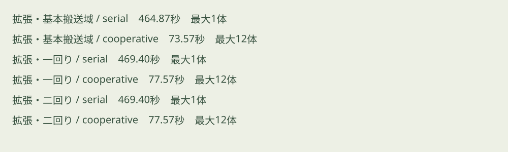
各周期の平面図
周期 A
第3層の通路成分グラフ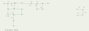
第2層の通路成分グラフ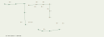
第1層の通路成分グラフ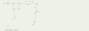
周期 B
第3層の通路成分グラフ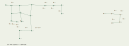
第2層の通路成分グラフ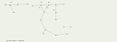
第1層の通路成分グラフ
周期 C
第3層の通路成分グラフ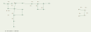
第2層の通路成分グラフ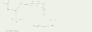
第1層の通路成分グラフ
遠隔区域と泉の配置
周期 A


周期 B


周期 C


各遷移の搬送経路・保管と一時退避
A→B
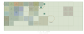
B→C
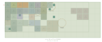
C→A
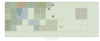